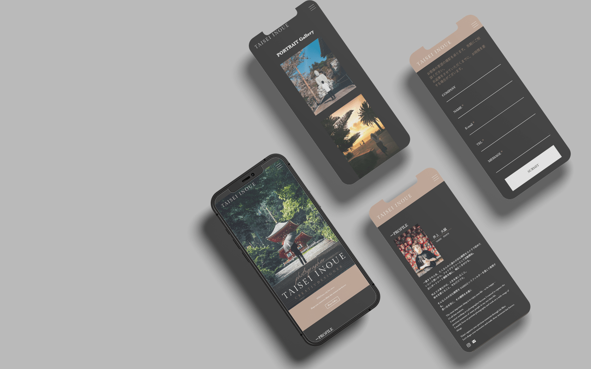
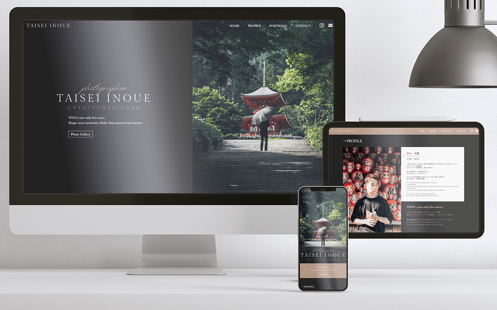

Photograper TAISEI
Period : April 2022~ (2 months)
Role : Planning / Design / Coding
Skills : Photoshop / Illustrator / Adobe XD / Dreamweaver (HTML / CSS / jQuery / Javascript)
I was in charge of creating a portfolio site for a friend who wants to be a photographer.
There is a need for “want a place to express myself as a photographer as well as SNS” and “need a site where I can sell myself in order to play an active role as a photographer”. It has a responsive design.
制作期間：2022年4月〜（2ヶ月)
担当範囲：企画 / デザイン / コーディング
使用技術：Photoshop / Illustrator / Adobe XD / Dreamweaver(HTML / CSS / jQuery / Javascript)
フォトグラファー志望の友人のポートフォリオサイト制作を担当させていただきました。
「SNSだけでなく、フォトグラファーとしての自分を表現する場が欲しい」「これからフォトグラファーとして活躍していくにあたり、自分を売り出せるサイトが必要」というニーズがあり、自身自ら営業しサイトの新規作成を担当させていただきました。レスポンシブデザインになっております。
Sophisticated image with a chic and calm impression based on black.
In line with the client's request, "prefer a black base because portrait photography is the main thing." I made a design that gives a chic and calm impression.
Also, during the interviews, I noticed that he desires to want people know what kind of person he is and make them feel free to contact him. I listened closely to his opinion, and then considered what content should be included, together.
黒ベースでシック・落ち着きがあり、洗練されたイメージ。
「ポートレート写真がメインのため、黒ベースが好ましい」というクライアント様のご希望に沿った、シックで落ち着きのある印象を与えられるようなデザインにしました。
また、ヒアリングしていく中で「自分をどんな人か知ってもらって、気軽に問い合わせてほしい」という思いがあることを知り、誠実で親しみやすいクライアントのイメージを残せるようなプロフィールページになるよう、記載内容を一緒に考えたりレイアウトを工夫したりしました。
- 
- 
Intention/Point :
I tried to make the image as large as possible so that the beauty of the photo could be conveyed. By basically using fade-in and out animation, we devised to give a soft impression even though it is sophisticated.
Problem/Solution :
I have devised ways to reduce the site withdrawal rate by making the structure simple and easy to understand, the number of pages, and setting the loading screen.
意図・ポイント :
写真の美しさが伝わるよう、画像をなるべく大きく配置するよう心がけました。アニメーションはフェードイン・アウトを基本的に利用することで、洗練された中にも柔らかい印象を与えられるよう工夫しました。
問題と解決策 :
シンプルでわかりやすい構造・ページ数にすることやLoading画面を設定することでサイト離脱率を下げる工夫をしました。